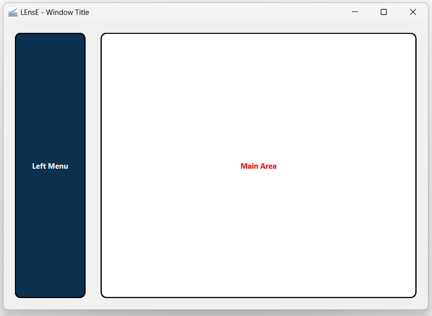
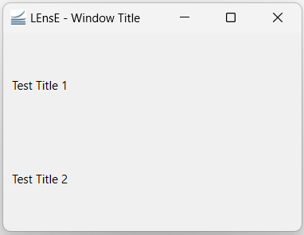
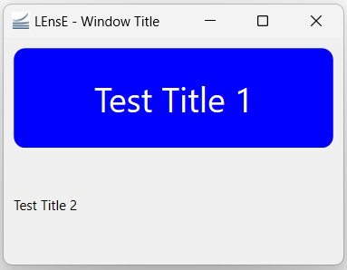

GUI1 Example
In this first example of GUI, we will learn the basics of the development of a graphical interface, based on PyQt6.
At the end of this example, you will be able to create this skeleton of graphical application.
{kind=link}
The complete file Gui01.py of this example is in the interface/ directory.
MainWindow and main function
As mentionned in the PyQt6 Basics page, graphical applications with Qt are based on containers and contents to include as graphical objects.
The main container of a window application is a QMainWindow object from Qt.
It could also be a QWidget object, but this case will not be processed in this tutorial.
Creation of a main window
To create the main block of your final application, you have to develop a class inherited from the QMainWindow object of the QtWidgets sub-library of the PyQt6 API.
Copy this few lines in a *.py file (my_app.py for example).
1from PyQt6.QtWidgets import QMainWindow
2
3class MainWindow(QMainWindow):
4 def __init__(self):
5 super().__init__()
To initialize this graphical main window, the initialization function of the mother class (QMainWindow class) is called.
This example code does not produce a windowed application because no MainWindow object is instantiated.
Creation of the main function
To vizualize the result of the previous code, the main function has to instantiate a MainWindow object and to execute the application, via the QApplication class.
Complete the previous my_app.py file by these new lines.
1from PyQt6.QtWidgets import QApplication
2
3if __name__ == "__main__":
4 app = QApplication(sys.argv)
5 window = MainWindow()
6 window.show()
7 sys.exit(app.exec())
The execution of this code give the previous showed in the next figure.

Title, icon and size of the application
Applications often have title and mostly icon that appear in the title bar (the top bar of the application window).
In the __init__ function of the MainWindow class, you can :
specify a title by the
setWindowTitlemethod of the QMainWindow class,add an icon to your application via a QIcon object from the QtGui sub-library of the PyQt6 API and the
setWindowIconmethod of the QMainWindow class
You can also specify the size and the position of your windowed application by using the setGeometry method of the QMainWindow class. This method takes 4 parameters :
x position of the top-left corner of your application (horizontal position),
y position of the top-left corner of your application (vertical position),
width of the window (horizontal size),
height of the window (vertical size)
1from PyQt6.QtGui import QIcon
2
3class MainWindow(QMainWindow):
4 def __init__(self):
5 super().__init__()
6
7 # Define Window title
8 self.setWindowTitle("LEnsE - Window Title")
9 self.setWindowIcon(QIcon('images/IOGS-LEnsE-logo.jpg'))
10 self.setGeometry(50, 50, 1000, 700)
About oriented object programming
In the previous example, all the methods used to improve the graphical interface (set a title or an icon…) refered to an object called self.
This object refered to the instantiation of itself, meaning that you want to perform actions contained in the different methods on the object itself.
In the next sections, you will see that it’s also possible to create specific attribute to an object by adding the term self behind the name of the attribute. For example, self.title corresponds to the attribute called title of the object. Each instantiation of an object where this attribute is initialized has its own title.
All the internal methods of a class can access to this specific attribute by using self.title.
First graphical container and object
The QMainWindow object is a container that can receive other graphical containers or objects.
Especially, it’s possible to add a graphical container (a QWidget object for example) in its central area.
Main window central container
In the __init__ function of the MainWindow class, you can create a QWidget object, called main_widget. This widget is then set as the central widget of the QMainWindow object.
1from PyQt6.QtWidgets import QWidget
2
3class MainWindow(QMainWindow):
4 def __init__(self):
5 super().__init__()
6 [...]
7
8 # Main Layout
9 self.main_widget = QWidget()
10 self.setCentralWidget(self.main_widget)
If you run the *.py file, nothing really changed before the previous test. The main issue is that the background color by default of a QWidget object is the same as the background color of the window itself.
You can change the background by adding this line in the __init__ function of the MainWindow class : self.main_widget.setStyleSheet("background-color: red;").
Layout of the window
Before adding graphical objects (as labels or buttons…), you need to specify to the container that will receive those objects how to place them in relation to each other. This behavior is setup by specific objects called layouts.
There are different types of layout in Qt. The main ones are :
vertical layout (QVBoxLayout) that lines up widgets vertically
horizontal layout (QHBoxLayout) that lines up widgets horizontally
grid layout (QGridLayout) that lays out widgets in a grid

Vertical, Horizontal and Grid layout examples.
To set a specific layout to a widget, you can use the setLayout method of the QWidget class.
1from PyQt6.QtWidgets import QVBoxLayout
2
3class MainWindow(QMainWindow):
4 def __init__(self):
5 super().__init__()
6 [...]
7
8 # Main Layout
9 self.main_widget = QWidget()
10 [...]
11
12 self.main_widget_layout = QVBoxLayout()
13 self.main_widget.setLayout(self.main_widget_layout)
First label
We can now include graphical objects in our windowed application !
The first graphical object we can try is the QLabel object that allows to write text. After instantiated a QLabel object, we have to add it to an existing layout by the addWidget method of the layout class.
In the case of a QVBoxLayout or a QHBoxLayout layout, the graphical object is positionned to the next vertical or horizontal place in the layout. In the case of a QGridLayout layout, you also need to specify the horizontal line and the vertical row where you want to place the graphical object (see example in the next section).
1from PyQt6.QtWidgets import QLabel
2
3class MainWindow(QMainWindow):
4 def __init__(self):
5 super().__init__()
6 [...]
7 self.title_label = QLabel('Test title')
8 self.main_widget_layout.addWidget(self.title_label)
{kind=link}
We can add a second area of text in our vertical layout.
1class MainWindow(QMainWindow):
2 def __init__(self):
3 [...]
4 self.title_label = QLabel('Test Title 1')
5 self.layout.addWidget(self.title_label)
6 self.title_label2 = QLabel('Test Title 2')
7 self.layout.addWidget(self.title_label2)
Here is the result :
{kind=link}
CSS decorations and alignment
Qt graphical elements are mostly based on HTML and CSS rendering. It’s possible to add CSS properties to lots of Qt objects as QLabel by using the setStyleSheet method of the graphical object class.
You can also align text and objects by using the setAlignment method of the graphical object class. This method is based on Qt.AlignmentFlag objects contained in the QtCore sub-library of PyQt6.
1from PyQt6.QtCore import Qt
2
3class MainWindow(QMainWindow):
4 def __init__(self):
5 [...]
6
7 self.title_label.setStyleSheet("background-color: blue; border-radius: 10px; color:white; font-size:30px;")
8 self.title_label.setAlignment(Qt.AlignmentFlag.AlignCenter)
The result of the code above is given in the next figure.
{kind=link}
Separated classes for containers
In order to not overload the code and to make the debugging process easier, you can create a specific class for each main part of your application, especially for containers. All the containers of your main application will inherite from the QWidget class.
SimpleWidget class
See also
- class SimpleWidget
Documentation of the <elements/simpleWidget> module.